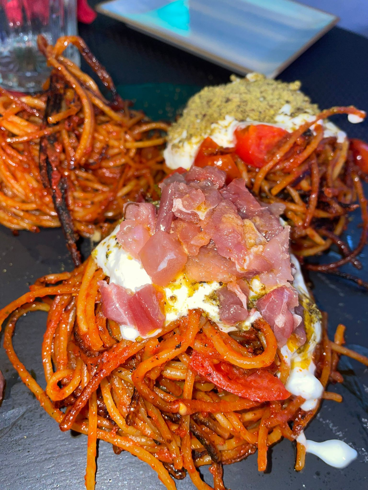
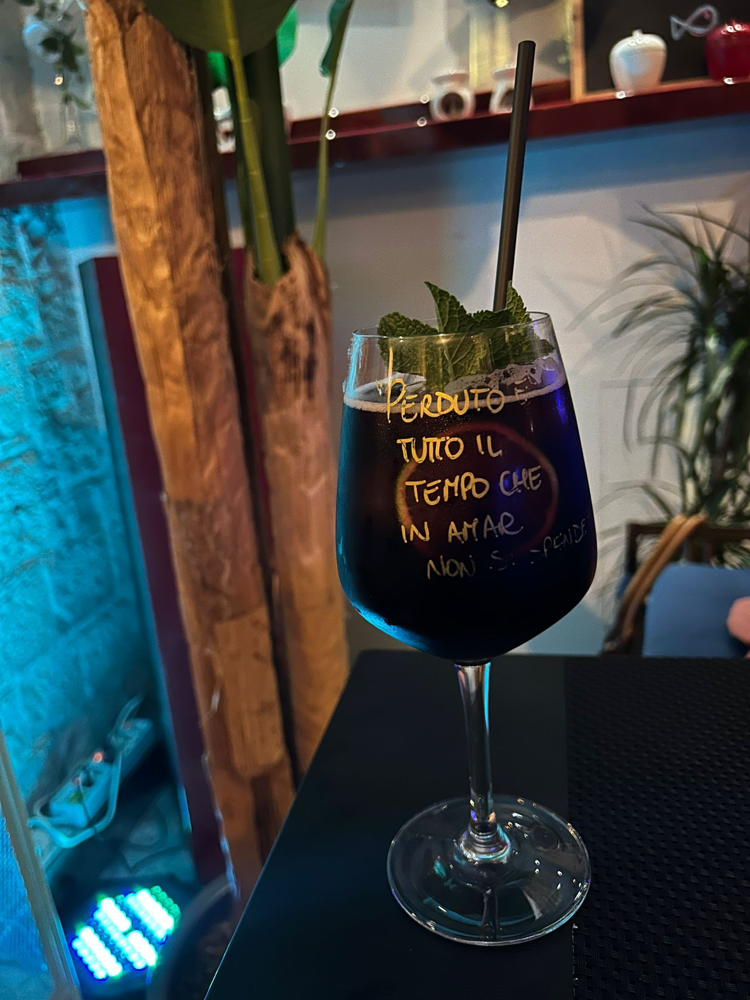
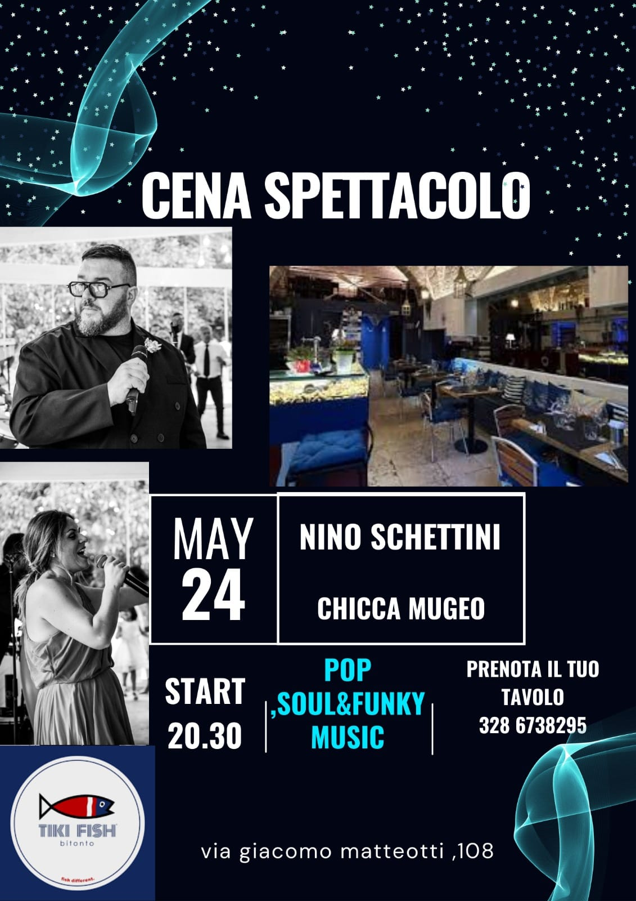

Eventi
All You Can Eat "Assassina"
Vieni a provare la nostra esperienza gourmet "Assassina" al Tiki Fish! Un'esplosione di sapori e freschezza in un unico piatto. Il nostro chef ha creato un mix irresistibile di ingredienti di alta qualita, perfettamente bilanciati per deliziare il tuo palato. Non perdere l'occasione di gustare questa prelibatezza unica nel suo genere. Prenota ora e preparati a vivere un'esperienza culinaria indimenticabile.
Gli spaghetti all'assassina sono stati inventati da Enzo Francavilla nel 1967, nel suo ristorante "Al Sorso Preferito" a Bari. Questo piatto e nato su richiesta di una coppia di clienti napoletani che cercavano un piatto unico e piccante.

| Data | Evento | Luogo |
|---|---|---|
| 10 Marzo 2026 | 20:00 - 22:00 | Ingresso libero fino a esaurimento posti |
| 11 Marzo 2026 | 20:00 - 22:00 | Ingresso libero fino a esaurimento posti |
| 12 Marzo 2026 | 20:00 - 22:00 | Ingresso libero fino a esaurimento posti |
| 13 Marzo 2026 | 20:00 - 22:00 | Ingresso libero fino a esaurimento posti |
| Nota: Il programma potrebbe subire variazioni. Consultare il sito ufficiale per aggiornamenti. | ||
- Spaghetti all'assassina: un piatto di pasta piccante e saporito, preparato con pomodoro, aglio, peperoncino e olio d'oliva.
- Spaghetti all'assassina con stracciatella.
- Spaghetti all'assassina con burrata.
- Spaghetti all'assassina con gorgonzola e pistacchio.
Fritto e Cocktail
Un'esperienza culinaria unica che unisce il meglio del fritto e dei cocktail. Il nostro menu offre una selezione di piatti fritti, preparati con ingredienti freschi e di alta qualita, accompagnati da cocktail artigianali creati dai nostri esperti mixologist. Unisciti a noi per una serata di sapori irresistibili e divertimento assicurato.

| Data | Evento | Posti |
|---|---|---|
| 20 Marzo 2026 | 20:00 - 22:00 | Ingresso libero fino a esaurimento posti |
| 27 Marzo 2026 | 20:00 - 22:00 | Ingresso libero fino a esaurimento posti |
| 30 Marzo 2026 | 20:00 - 22:00 | Ingresso libero fino a esaurimento posti |
| 31 Marzo 2026 | 20:00 - 22:00 | Ingresso libero fino a esaurimento posti |
| Nota: Il programma potrebbe subire variazioni. Consultare il sito ufficiale per aggiornamenti. | ||
Karaoke
Unisciti a noi per una serata di divertimento e musica con il nostro evento "Karaoke". Scegli la tua canzone preferita, prendi il microfono e mostra il tuo talento vocale davanti a un pubblico entusiasta. Che tu sia un cantante esperto o semplicemente voglia divertirti con gli amici, questa e l'occasione perfetta.

| Data | Evento | Posti |
|---|---|---|
| 24 Marzo 2026 | 20:00 - 22:00 | Ingresso su prenotazione |
| Nota: Il programma potrebbe subire variazioni. Consultare il sito ufficiale per aggiornamenti. | ||